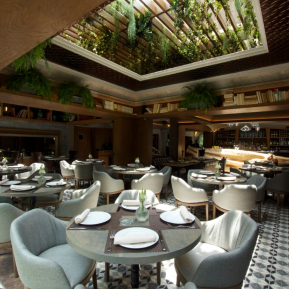
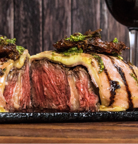

<div class="container-fluid mt-5  animate__animated animate__bounce">
  


    <owl-carousel-o [options]="customOptions">
        <ng-template carouselSlide></ng-template>  
        <ng-template carouselSlide></ng-template>  
        <ng-template carouselSlide></ng-template>
        <ng-template carouselSlide></ng-template> 
        <ng-template carouselSlide></ng-template>   
    </owl-carousel-o>
 

</div>
